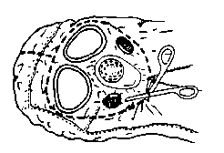
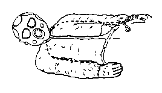
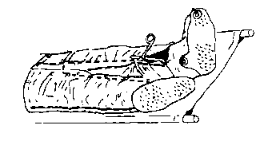
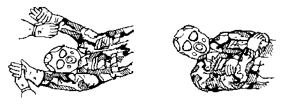

APPENDIX C
PATIENT DECONTAMINATION PROCEDURES
C-1. Prepare Patient Decontamination Chlorine Solutions
The standard skin decontamination kits are the M258A1 and the M291. An alternative patient decontamination agent is a chlorine solution; however, the chlorine solution must be prepared. Two concentrations of the chlorine solution are required. A 5 percent solution to decontaminate gloves, aprons, litters, scissors, the patients mask hood; and other nonskin contact surfaces. A 0.5 (1/2) percent solution to decontaminate the patient¼s mask, skin, and splints, and to irrigate wounds. To prepare the solutions calcium hypochlorite (HTH) granules (supplied in 6 ounce jars in the chemical patient treatment and decontamination MES), or sodium hypochlorite (household bleach) may be used. Prepare the required concentrations as shown in Table C-1.
Table C-1. Preparation of Chlorine Solution for Patient Decontamination
HTH OUNCES HTH MRE SPOONFULS HOUSEHOLD BLEACH PERCENT IN 5 GALLONS OF WATER 6 *5 2 QUARTS 0.5 48 40 ** 5 * These measurements are used when bulk HTH is used. To measure this preparation use the plastic spoon supplied with your Meal-to-Eat (MRE). The amount of chlorine to be used is a heaping spoonful (that is all that the spoon will hold. Do not shake any granules off the spoon before adding to the water). ** Do not dilute in water, household bleach is a 5 percent solution.
C-2. Decontaminate a Chemical Agent Litter Patient
Patients should be decontaminated before they receive medical treatment; however, life- or limb-care may be required before decontamination. They are decontaminated by the patient decontamination team. Decontaminate a litter patient as follows:
NOTE:
1. Bandage scissors are used in this procedure. They are placed in a container of 5 percent chlorine solution between each use.
2. To remove thickened agents scrub the scissors with a sponge dipped in the 5 percent solution.
3. Use the ABC-M8VGH (M8) detector paper or the Chemical Agent Monitor (CAM) to determine the extent of contamination on each patient before beginning decontamination procedures. Some patients may have already been decontaminated.
4. For treatment procedures, refer to FM 8-9, FM 8-33, FM 8-285 and the NATO Handbook "Emergency War Surgery."
a. Step 1: Decontaminate the Patient's Mask and Hood.
(1) Move the patient to the clothing removal station. After the patient has been triaged and treated (if necessary) by the senior medic in the patient decontamination area, he is moved to the litter stands at the clothing removal station.
(2) Decontaminate the mask and hood. Use the M291 or M258A1 Skin Decontamination Kit; or sponge down the front, sides, and top of the mask hood with a 5 percent chlorine solution.
(3) Remove the hood. Remove the hood by cutting the M6A2 hood (Figure C-1), or by loosening the hood from the mask attachment points for the Quick Doff Hood. Before cutting the hood, dip the scissors in a 5 percent chlorine solution. Then cut the neck cord, zipper cord, and the small string under the voicemitter. Next, release or cut the hood shoulder straps and unzip the hood zipper. Proceed by cutting the hood upward, close to the filter inlet cover and eye lens outsert, upward to the top of the eye outsert, and across the forehead to the outer edge of the other eye lens outsert. Proceed downward toward the patient's shoulder staying close to the eye lens and filter inlet cover, then across the lower part of the voicemitter to the zipper. After dipping the scissors in the chlorine solution, cut the hood from the center of the forehead over the top of the head and fold the left and right sides of the hood to the side of the patient's head, laying the sides of the hood on the litter.
Figure C-1. Cutting M6A2 Protective Mask Hood.

(4) Decontaminate the patient's protective mask and face. Using the pads from the M291 kit, the wipes from the M258A1 kit, or a 0.5 percent chlorine solution, wipe the external parts of the mask. Cover both mask air inlets with gauze or your hand to keep the mask filters dry. Continue by wiping the exposed areas of the patients face, to include the neck, and behind the ears.
(5) Remove the field medical card. Cut the patient's US Field Medical Card (FMC) tie wire, allowing the FMC to fall into a plastic bag. Seal the plastic bag and rinse the outside of the bag with a 0.5 percent chlorine solution. Place the plastic bag with the FMC under the back of the protective mask head straps.
b. Step 2: Remove Gross Contamination. Remove gross contamination from the patient's overgarment by wiping all visible contamination spots with a chlorine solution, M291 pads, or wipes from the M258A1 kit. Decontaminate the mask by:
- Using the M291 pad on the exterior and interior of the mask, OR
- Using the M258A1 wipe 1, then wipe 2 for the exterior of the mask; using wipe 2, then wipe 1 for the interior of the mask.
c. Step 3: Remove the Patient's Protective Overgarment and Personal Effects.
(1) Cut the patient's overgarment. The overgarment jacket and trousers may be cut simultaneously. Two persons may be cutting clothing at the same time. Cut clothing around bandages, tourniquets, and splints.
CAUTION:
Bandages may have been applied to control severe bleeding, and are treated like tourniquets. Bandages, and tourniquets are removed only by the supervising medic. Splints are only removed by a physician.
(a) Remove overgarment jacket. Make two cuts, one up each sleeve from the wrist area of the sleeves, up to the armpits, and then to the collar (Figure C-2). Do not allow the gloves to touch the patient along the cut line. Dip the scissors in the 5 percent chlorine solution before making each cut to prevent contamination of the patient's uniform or underclothing. Keep the cuts close to the inside of the arms so that most of the sleeve material can be folded outward. Unzip the jacket; roll the chest sections to the respective sides with the inner surface outward. Continue by tucking the clothing between the arm and chest.
Figure C-2. Cutting the Overgarment Jacket.

(b) Remove the overgarment trousers. Cut both trousers legs starting at the ankle as shown in Figure C-3. Keep the cuts near the inseams to the crotch. With the left leg, continue cutting to the waist, avoiding the pockets. With the right leg, cut across at the crotch to and join the left leg cut. Place the scissors in the 5 percent chlorine solution. Fold the cut trouser halves away from the patient and allow the halves to drop to the litter with contaminated (green) side down. Roll the inner leg portion under and between the legs.
Figure C-3. Cutting the Overgarment Trousers.

(2) Remove outer gloves. This procedure can be done with one person on each side of the patient working simultaneously. If the patient's condition permits, lift his arms by grasping his gloves (Figure C-4) and roll the overgarment sleeve material away from the patient as you lift. While holding the patient's arms up, grasp the jacket material near the zipper and fold it away from the patient. Grasp the fingers of the glove, roll the cuff over the fingers, turning the glove inside out. Do not remove the inner cotton gloves at this time. Carefully lower his arms across his chest after the gloves have been removed. Do not allow the patient's arms to come into contact with the exterior of his overgarment. Drop his gloves into the contaminated waste bag. Dip your gloves in the 5 percent chlorine solution.
Figure C-4. Removing Outer Gloves and Positioning Arms After Glove Removal.

(3) Remove the overboots. Cut the overboot laces and fold the lacing eyelets flat outwards. If the green overboot is worn, first try to remove the overboot without cutting; if necessary, cut the boot along the front. While standing at the foot of the litter, hold the heel with one hand, pull the overboot downwards, then pull towards you to remove the overboot over the combat boot heel. If both overboots are removed simultaneously, this will reduce the likelihood of contaminating one of the combat boots. While holding the heels off of the litter, have a decontamination team member wipe the end of the litter with the 5 percent chlorine solution to neutralize any liquid contamination that was transferred to the litter from the overboots. Lower the patient's heels onto the decontaminated litter. Place the overboots in the contaminated waste bag.
(4) Remove the patient's personal effects. Remove the patient's personal effects from his protective overgarment and BDU pockets. Place the articles in a plastic bag, label with patient's identification, and seal the bag. If the articles are not contaminated, they are returned to the patient. If the articles are contaminated, place them in the contaminated holding area until they can be decontaminated, then return them to the patient.
d. Step 4: Remove the Patient's Battledress Uniform.
(1) Remove the combat boots. Cut the boot laces along the tongue. Remove the boots by pulling them towards you. Place the boots in the contaminated waste bag. Do not touch the patient's skin with contaminated gloves when removing his boots.
(2) Remove inner clothing. Follow the procedures for cutting away the protective overgarment and rolling it away from the patient. If the patient is wearing a brassiere, cut it between the cups; cut both shoulder straps where they attach to the cups and lay them back off of the shoulders. Remove the socks and cotton gloves.
e. Step 5: Transfer the Patient to a Decontamination Litter. Three decontamination team members decontaminate their gloves and apron with the 5 percent chlorine solution. One member places his hands under the small of the patient's legs and thighs; a second member places his arms under the patient's back and buttocks; and the third member places his arms under the patient's shoulders and supports the head and neck. They carefully lift the patient using their knees, not their back to minimize back strain. While the patient is elevated another decontamination team member removes the litter from the litter stands and another member replaces it with a clean decontaminable litter, or a canvas litter with a plastic sheeting cover. The patient is carefully lowered onto the clean litter. Two decontamination members carry the litter to the skin decontamination station. The contaminated clothing and overgarments are placed in bags and moved to the contaminated waste dump. Rinse the dirty litter with the 5 percent decontamination solution and place it in a litter storage area. Return decontaminated litters by ambulance to the maneuver units.
f. Step 6: Skin Decontamination.
(1) Spot decontamination. With the patient in a supine position, spot decontaminate the skin using the M291/M258A1 kit or a 0.5 percent chlorine solution. Decontaminate areas of potential contamination, particularly tears or holes in the protective ensemble; other areas include the neck, wrists, and lower parts of the face.
(2) Aidman care. During clothing removal, the clothing were cut around bandages, tourniquets, and splints and left in place.
(a) The aidman replaces the old tourniquet by placing a new tourniquet 1/2 to 1 inch above the old one. He then removes the old one and decontaminates the skin using the M291 pads, the M258A1 wipes, or the 0.5 percent chlorine solution.
(b) Usually the aidman gently cuts away bandages. The aidman decontaminates the area around the wound with the 0.5 percent chlorine solution. The wound may also be irrigated with the 0.5 percent chlorine solution, if needed to remove contamination. If bleeding begins the aidman replaces the bandage with a clean one. DO NOT use the M291 pads or wipes from the M258A1 kit around the wounds.
(c) DO NOT remove splints. Decontaminated splints by liberally applying the 0.5 percent chlorine solution to them (include the padding and cravats). Splints are ONLY removed by a physician. Check the patient for completeness of decontamination by using M8 detection paper or the CAM.
NOTE:
Other monitoring devices may be used when available.
(d) Place contaminated bandages and coverings in a waste bag. Seal the bag and place it in the contaminated waste dump.
g. Step 7: Transfer the Patient Across the Shuffle Pit. The patient's clothing has been cut away and his skin, bandages, and splints have been decontaminated. Transfer the litter to the shuffle pit and place it on the litter stands. Patient decontamination team members must not cross the shuffle pit. A third member of the decontamination team assists with transferring the patient to a clean litter in the shuffle pit).
(1) Decontamination personnel rinse or wipe down their aprons and gloves with the 5 percent chlorine solution.
(2) Three decontamination team members lift the patient off of the decontamination litter. One member places his arms under the small of the patient's legs and thigh; the second member places his arms under the patient's back and buttocks; and the third places his arms under the patient's shoulders and supports the head and neck. They carefully lift the patient with their knees, not their back to minimize back strain.
(3) While the patient is elevated, another team member removes the litter from the stands and returns it to the decontamination area. A medic from the clean side of the shuffle pit replaces the litter with a clean one. The patient is lowered onto the clean litter. Two medics from the clean side of the shuffle pit move the patient to the clean treatment area. The patient is treated in this area or awaits processing into the collective protective shelter. The litter is wiped down with the 5 percent chlorine solution in preparation for reuse.
NOTE:
Before decontaminating another patient, each decontamination team member drinks approximately 1/2 cup of water. The exact amount of water consumed is increased or decreased according to the work level and temperature (see Table C-2).
Table C-2. Heat Injury Prevention and Water Consumption.
*Criteria Controls Physical Activity for Soldiers Heat Condition/Category WBGT Index °F Water Intake Quart/Hour **Acclimatized Work/Rest Unacclimatized Soldier and Trainees White/1 78-81.9 At least 1/2 Continuous Green/2 82-84.9 At least 1/2 50/10 minutes Use discretion in planning heavy exercises. Yellow/ 85-87.9 At least 1 45/15 minutes Suspend strenuous exercise during first three weeks of training. Training activities may be continued on a reduced scale after the second week of training. Avoid activity in direct sun. Red/4 88-89.9 At least 1 1/2 30/30 minutes Curtail strenuous exercise for all personnel with less than 12 weeks of hot weather training. Black/5 90 and up More than 2 20/40 minutes Physical training and strenuous exercise is suspended. Essential operational commitments not for training, where risk of heat casualties may be warranted, is excluded from suspension. Enforce water intake to minimize expected heat injuries. * MOPP gear or body armor adds 10 °F to the WBGT index.
** An acclimatized soldier is one who has worked in the given heat condition for 10 to 14 days.
NOTE: "Rest" means minimal physical activity. Rest should be accomplished in the shade if possible. Any activity requiring only minimal physical activity can be performed during "rest" periods. EXAMPLES: Training by lecture or demonstration, minor maintenance procedures on vehicles or weapons, personal hygiene activities such as skin and foot care.
C-3. Decontaminate an Ambulatory Chemical Agent Patient
All ambulatory patients will not be completely decontaminated at the battalion aid station. Stable patients not requiring treatment at the BAS, but requiring evacuation to the division clearing station or a corps hospital for treatment may be evacuated in his protective overgarments and mask by any available transportation; such as a patient with a broken arm. However, before evacuation, spot removal of all thickened agents from his protective clothing will be accomplished. For ambulatory patients requiring treatment at the BAS, complete decontamination will be accomplished. A member of the decontamination team or other ambulatory patients will assist in the clothing removal and skin decontamination of these patients. Bandage scissors are used in this procedure; they are returned to the container of 5 percent chlorine solution when not in use.
NOTE:
1. Most ambulatory patients will be treated in the contaminated treatment area and RTD.
2. When an ambulatory patient's clothing is removed, he becomes a litter patient. The BAS and DCS do not have clothing to replace those cut off during the decontamination process. The patient must be placed in a PPW for protection during evacuation.
a. Step 1: Remove Load Bearing Equipment. Remove the load bearing equipment (LBE) by unfastening/unbuttoning all connectors or tie straps; then place the LBE into a plastic bag. Place the plastic bag in the designated storage area. The LBE and contents are decontaminated as time permits. Once decontaminated personal items are returned to the patient. Decontaminated LBE is turned-in to the S4.
b. Step 2: Decontaminate the Patient's Mask and Hood.
(1) Send patient to clothing removal station. After the patient has been triaged and treated (if necessary) by the senior medic in the patient decontamination station he walks to the clothing removal station.
(2) Decontaminate and remove mask hood.
(a) Sponge down the front, sides, and top of the hood with a 5 percent chlorine solution. Keep this solution off of the patient's skin. Remove the hood by cutting the M6A2 hood (Figure C-2) or by loosening the Quick Doff Hood or other hoods at the mask attachment points. Before cutting the hood, dip the scissors in the 5 percent chlorine solution. Begin by cutting the neck cord, zipper cord, and the small string under the voicemitter. Next, release or cut the hood shoulder straps and unzip the hood zipper. Proceed by cutting the hood upward, close to the filter inlet cover and eye outserts, to the top of the eye outsert, across the forehead to the outer edge of the next eye outsert. Proceed downward toward the patient's shoulder staying close to the eye lens and filter inlet, then across the lower part of the voicemitter to the zipper. After dipping the scissors in the 5 percent chlorine solution again, cut the hood from the center of the forehead over the top of the head and fold the right and right sides of the hood away from the patient's head, removing the hood.
(b) Decontaminate the protective mask and patient's face by using the pads from the M291 kit, the wipes from the M258A1 kit, or the 0.5 percent chlorine solution. Wipe the external parts of the mask, cover both mask air inlets with gauze or your hands to keep the mask filters dry. Continue by wiping the exposed areas of the patient's face, to include the neck and behind the ears.
c. Step 3: Remove the Field Medical Card. Cut the FMC (DD Form 1380) tie wire, allowing the FMC to fall into a plastic bag. Seal the plastic bag and rinse it with the 0.5 percent chlorine solution. Place the plastic bag under the back of the protective mask head straps.
d. Step 4: Remove all Gross Contamination from the Patient's Overgarment. Remove all visible contamination spots by using the pads from the M291 kit, the wipes from the M258A1 kit, or a sponge with the 0.5 percent chlorine solution.
e. Step 5: Remove Overgarment.
(1) Remove overgarment jacket.
(a) Have the patient stand with his feet spread apart at shoulder width. Unsnap the jacket front flap and unzip the jacket. If the patient can extend his arms, have him clinch his fists and extend his arms backward at about a 30 degree angle. Move behind the patient, grasping his jacket collar at the sides of the neck, peel the jacket off the shoulders at a 30 degree angle down and away from the patient. Avoid any rapid or sharp jerks which spread contamination; gently pull the inside sleeves over the patient's wrists and hands.
(b) If the patient cannot extend his arms, you must cut the jacket to aid in its removal. Dip the scissors in the 5 percent chlorine solution between each cut. As with the litter patient, cut both sleeves from the inside starting at the wrist up to the armpit. Continue cutting across the shoulder to the collar. Cut around bandages or splints, leaving them in place. Next, peel the jacket back and downward to avoid spreading contamination. Ensure that the outside of the jacket does not touch the patient or his inner clothing.
(c) Remove the patient's butyl rubber gloves by grasping the heel of the glove, peel the glove off with a smooth downward motion. Place the contaminated gloves in a plastic bag with the overgarment jacket. Do not allow the patient to touch his trousers or other contaminated object with his exposed hands.
(2) Remove the patient's overboots. Remove the patient's overboots by cutting the laces with scissors dipped in the 5 percent chlorine solution; fold the lacing eyelets flat on the ground. Step on the toe and heel eyelets to hold the overboot on the ground and have the patient step out of it. Repeat this procedure for the other overboot. If the overboots are in good condition, they can be decontaminated and reissued (new laces will be required).
(3) Remove overgarment trousers.
(a) Unfasten or cut all ties, buttons, or zippers before grasping the trousers at the waist and peeling them down over the patient's combat boots. Again, the trousers are cut to aid in removal. If necessary, cut both trousers legs starting at the ankle, keep the cuts near the inside of the legs, along the inseam, to the crotch. Cut around all bandages, tourniquets, or splints, continue to cut up both sides of the zipper to the waist and allow the narrow strip with the zipper to drop between the legs. Place the scissors in the decontamination solution. Peel or allow the trouser halves to drop to the ground. Have the patient step out of the trouser legs one at a time. Place the trousers in the contaminated disposal bag.
(b) Have the patient remove his cotton glove liners to reduce the possibility of spreading contamination. Have the patient grasp the heel of one glove liner with the other gloved hand; peeling the glove off of his hand. Hold the removed glove by the inside and grasp the heel of the other glove, peeling it off of his hand. Place both gloves in the contaminated waste bag.
(c) Place the patient's personal effects in a clean bag and label with the patient's identification. If they are not contaminated, give them to him. If his personal effects are contaminated, place the bagged items in the contaminated storage area until they can be decontaminated, then return them to the patient.
f. Step 6: Check Patient for Contamination. After the patient's overgarments have been removed, check his battledress uniform by using M8 detection paper or the CAM. Carefully survey all areas of the patient's clothing, paying particular attention to discolored areas on the uniform, damp spots, tears, and areas around the neck, wrist, ears, and dressings, splints, or tourniquets. Remove spots by using the 0.5 percent chlorine solution, using the pads from the M291 kit, or the wipes from the M258A1 kit or cutting away the contaminated area. Always dip the scissors in the 5 percent chlorine solution after each cut. Recheck the area with the detection material.
g. Step 7: Decontaminate the Patient's Skin.
(1) If contamination is found on the patient's skin; use the M291 kit, the wipes from the M258A1 kit, or the 0.5 percent chlorine solution to spot decontaminate exposed neck and wrist areas, other areas where the protective overgarment was damaged, dressings, bandages, or splints.
(2) Have the patient hold his breath and close his eyes. Have him or assist him in lifting his mask at the chin. Wipe his face quickly from one ear being careful to wipe all folds of the skin, top of the upper lip, chin, dimples, ear lobes, and nose, up the other side of the face to the other ear. Wipe the inside of the mask where it touches the face. Have the patient reseal and check his mask.
CAUTION:
Keep the decontamination solution out of the patient's eyes and mouth.
h. Step 8: Remove Bandages and Tourniquets. During the clothing removal, the clothing around bandages, tourniquets, and splints was cut and left in place.
(1) The aidman will replace the old tourniquet by placing a new one 1/2 to 1 inch above the old tourniquet. When the old tourniquet is removed, the skin is decontaminated with the M291 pads, the M258A1 wipes, or the 0.5 percent chlorine solution.
(2) DO NOT remove splints. Decontaminate splints by liberally rinsing them, the padding, and cravats with the 0.5 percent chlorine solution.
(3) The aidman gently cuts away bandages. Decontaminate the area around the wound with the 0.5 percent chlorine solution. The aidman irrigates contaminated wounds with the 0.5 percent chlorine solution. The aidman covers massive wounds with plastic secured with tape. Mark the wound as contaminated. The aidman also replaces bandages that are needed to control massive bleeding.
(4) Place contaminated bandages and coverings in a plastic bag and sealing the bag with tape. Place the plastic bags in the contaminated waste dump.
i. Step 9: Proceed Through the Shuffle Pit to the Clean Treatment Area. Have the decontaminated patient proceed through the shuffle pit to the clean treatment area. Make sure that the patient's boots are well decontaminated by stirring the contents of the shuffle pit as he crosses it.
C-4. Decontaminate Biological Agent-Contaminated Patients
The decontamination station as established for chemical agent patients can also be used for biologically contaminated patients. The 8-man patient decontamination team is required for biologically contaminated patient decontamination procedures.
C-5. Decontaminate Biological Agent-Contaminated Litter Patient
a. Remove the Field Medical Card. Remove the FMC by cutting the tie wire and allowing the FMC to drop into a plastic bag. Keep the FMC with the patient.
b. Decontaminate the Patient's Outerclothing. Patient decontamination team members first apply a liquid disinfectant, such as chlorine dioxide solution, to the patient's clothing and the litter.
CAUTION:
Disinfectant solution for use in patient decontamination procedures must be prepared in accordance with the label instructions on the container. The strength of solution for use on the skin can also be used to irrigate the wound.
c. Remove the Patient's Clothing. Patient decontamination team members remove the patient's clothing as in decontamination of chemical agent patients. Bandages, tourniquets, and splints are not removed. Move patient to a clean litter as described for a chemical agent patient. Place patient's personal effects in a clean plastic bag; label the bag. If uncontaminated, give to patient. If contaminated, place in contaminated storage, decontaminate when possible, then return to patient. Place patient's clothing in a plastic bag and dispose in a contaminated waste dump.
d. Decontaminate the Skin. Bathe patient with soap and water, followed by reapplication of a liquid disinfectant. The medic places a new tourniquet 1/2 to 1 inch above the old tourniquet, then he removes the old one. The medic removes bandages and decontaminates the skin and wound with the disinfectant solution or the 0.5 percent chlorine solution; he replaces the bandage if needed to control bleeding. Splints are disinfected by soaking the splint, cravats, and straps with the disinfectant solution.
NOTE:
Use a 0.5 percent chlorine solution to decontaminate patients suspected of being contaminated with mycotoxins.
e. Transfer the Patient Across the Shuffle Pit. Two decontamination team members move patient to the hotline and transfer him to a clean litter as described for chemical agent patients. Place the patient's FMC in the plastic bag on the clean litter with him. Two medics from the clean side of the hotline move the patient from the hotline to the clean treatment/holding area.
C-6. Decontaminate Biological Agent-Contaminated Ambulatory Patients
a. Remove the Field Medical Card. Remove the patient's FMC by cutting the tie wire and allowing it to drop into a plastic bag. Keep the bagged FMC with the patient.
b. Decontaminate the Patient's Outerclothing. Apply a liquid disinfectant solution, such as chlorine dioxide, over the patient's clothing.
c. Remove the Patient's Clothing. Remove the patient's clothing as described for a chemical agent patient. Do not remove bandages, tourniquets, or splints. Place patient's clothing in a plastic bag and move the plastic bag to the contaminated waste dump.
d. Decontaminate the Skin. Have the patient bathe with soap and water. If the patient is unable to bathe himself, a member of the decontamination team must bathe him. Reapply the disinfectant solution. A medic places a new tourniquet 1/2 to 1 inch above the old one and removes the old one. A medic removes bandages and decontaminates the wound and surrounding skin area with the disinfectant solution or the 0.5 percent chlorine solution. The medic replaces the bandage if required to control bleeding. Splints are decontaminated in place by applying the disinfectant solution or the 0.5 percent chlorine solution to the splint, cravats, and straps.
e. Proceed Through the Shuffle Pit to the Clean Treatment Area. Direct the patient to cross the hotline to the clean treatment area. His boots must be decontaminated at the hotline before he enters the clean treatment area.
NOTE:
This patient becomes a litter patient. He must be placed in a patient protective wrap before evacuation.
C-7. Decontaminate Nuclear-Contaminated Patients
The practical decontamination of nuclear contaminated patients is easily accomplished without interfering with the required medical care.
NOTE:
Monitor patients by using a radiation detector before, during, and after each step of the decontamination procedure.
C-8.Decontaminate a Nuclear-Contaminated Litter Patient
a. Remove the Patient's Clothing. Patient decontamination team members remove the patient's outer clothing as described for chemical agent patients. Do not remove bandages, tourniquets, or splints. Move the patient to a clean litter. Place the patient's contaminated clothing in a plastic bag and move the bagged clothing to the contaminated waste dump.
b. Decontaminate the Skin. Wash exposed skin surfaces with soap and water. Wash the hair with soap and water, or clip the hair and wash the scalp with soap and water.
c. Transfer the Patient Across the Shuffle Pit. Two team members move the patient to the shuffle pit. Two medics from the clean side of the hotline move the patient into the clean treatment area.
C-9. Decontaminate a Nuclear-Contaminated Ambulatory Patient
a. Remove Patient's Clothing. Have the patient remove or a decontamination team member assists the patient in removing his outer clothing. Place his contaminated clothing in a plastic bag and move the bagged clothing to the contaminated waste dump.
b. Decontaminate the Skin. Wash exposed skin surfaces with soap and water. Wash his hair with soap and water, or clip the hair and wash the scalp with soap and water.
c. Proceed Through the Shuffle Pit to the Clean Treatment Area. Direct the patient to move to the hotline. Decontaminate his boots before he crosses into the clean treatment area.
NOTE:
This patient becomes a litter patient. He must be protected by using a blanket or other protective material during evacuation.
¦ About This Manual ¦ Preface ¦ Authorities ¦ Table of Contents ¦ Chapter 1 ¦ Chapter 2 ¦ Chapter 3 ¦ Chapter 4 ¦
¦ Chapter 5 ¦ Chapter 6 ¦ Chapter 7 ¦ Appendix A ¦ Appendix B ¦ Appendix D ¦ Appendix E ¦
¦ Appendix F ¦ Appendix G ¦ References ¦ Glossary ¦ Index ¦ Home ¦